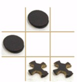

Para efeitos da nota atribuida à resolução de exercícios ao longo do semestre - Submeter até 23:59 de 20 de Novembro
(o problema continuará depois disponível para submissão, mas sem contar para a nota)
[para perceber o contexto do problema deve ler o guião da aula #04]
 Quem não conhece o famoso jogo do galo? Neste problema é-lhe pedido que dado um tabuleiro de um jogo do galo, com algumas jogadas possivelmente já feitas, o analise e diga se algum dos jogadores ganhou. Para complicar um pouco as coisas, imagine uma generalização do jogo, sempre num tabuleiro quadrado, mas que pode ser de dimensão diferente de 3x3. Tal como no original, os jogadores jogam à vez e ganham se conseguirem preencher completamente uma linha, uma coluna ou uma diagonal.
Na primeira linha vem um número N, indicando a dimensão do tabuleiro (que é sempre quadrado).
Seguem-se N Linhas, cada uma com N caracteres ('X', 'O' ou '.') indicando o estado actual do jogo.
Tal como esperado, X e O representam uma casa ocupada por um dos dois jogadores, e . representa uma casa vazia.
Pode assumir que será sempre um estado de jogo válido (por exemplo, nunca acontecerá haver dois vencedores).
| Input | Output | |
|---|---|---|
| Exemplo 1 |
3 ... ... ... |
Jogo incompleto |
| Exemplo 2 |
4 XXXX OOO. .... .... |
Ganhou o X |
| Exemplo 3 |
2 XO O. |
Ganhou o O |
| Exemplo 4 |
3 XOX OOX XXO |
Empate |
Estruturas de Dados (CC1007)
DCC/FCUP - Faculdade de Ciências da Universidade do Porto